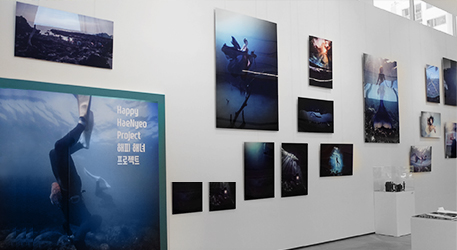

KB청춘마루만의 열린문화공간 ‘청춘마루’는 젊은이를 상징하는 청춘과 넓고 트인 공간(floor)을 표현하는 마루를 조합한 브랜드로,
청춘의 열정을 응원하는 다양한 서비스와 이벤트를 제공하여
젊은이들이
더 크게,
더 멀리
꿈을 펼칠 수 있는 공간을 지향합니다.
THE MARU TO CREATE.
청춘의 열정을 응원하는 다양한 서비스와 이벤트를 제공하여
젊은이들이
더 크게,
더 멀리
꿈을 펼칠 수 있는 공간을 지향합니다.
THE MARU TO CREATE.
청춘의 일상을 새롭게 설계하는 공간
청춘마루가 위치한 홍대는 젊은 문화의 중심지로 다양한 문화와 감성이 교차하고
수많은 젊은 발걸음이 향하는 곳입니다.
청춘마루는 재미있게 놀고 즐기는 공간에서 청춘들과 소통을 확대하고,
청춘들이 꿈을 키우고 이룰 수 있도록 지원하는 공간입니다.
KB국민은행은 전시, 아카데미, 강연, 공연, 영화제, 파티, 버스킹 등 다채로운 문화 콘텐츠 제공으로 청춘의 일상을 새롭게 설계하는 청춘마루로 운영할 것입니다.
청춘마루는 재미있게 놀고 즐기는 공간에서 청춘들과 소통을 확대하고,
청춘들이 꿈을 키우고 이룰 수 있도록 지원하는 공간입니다.
KB국민은행은 전시, 아카데미, 강연, 공연, 영화제, 파티, 버스킹 등 다채로운 문화 콘텐츠 제공으로 청춘의 일상을 새롭게 설계하는 청춘마루로 운영할 것입니다.
청춘의 기억과 경험을 담는 공간
청춘마루는 지난 40여 년간 은행 지점으로 이용되던 서교동 지점 공간을 리모델링하여 문화공간으로
탄생하였습니다. 홍대 지역을 누구보다 잘 아는 홍익대 건축대학 교수진들의 설계를 통해 오래된
건물을 허물기보다는 도시의 역사와 기억을 보존하는 디자인이 제안되었습니다.
기존 기둥에 계단형 공간을 만들었으며 전층을 가로지르는 노랑 계단에서 때로는 공연 관람을 위한 객석, 때로는 휴식을 위한 공간 등 가변적인 활용을 제안합니다.
기존 기둥에 계단형 공간을 만들었으며 전층을 가로지르는 노랑 계단에서 때로는 공연 관람을 위한 객석, 때로는 휴식을 위한 공간 등 가변적인 활용을 제안합니다.
청춘들을 위한 열린 문화공간
청춘마루는 차별화된 공간과 콘텐츠 구성을 통해 청춘들이 미래를
꿈꾸고,
만들고,
즐기는 공간이 될 것입니다.
특히, 은행 공간이 도시를 향해 열리면서 무심코 지나가던 길목은 건물 안으로 청춘들을 끌어들이는 문화의 길이 되어 이곳에서 청춘이 시작되어 즐거운 기억과 경험을 축적해가는 공간을 선사할 것입니다.
꿈꾸고,
만들고,
즐기는 공간이 될 것입니다.
특히, 은행 공간이 도시를 향해 열리면서 무심코 지나가던 길목은 건물 안으로 청춘들을 끌어들이는 문화의 길이 되어 이곳에서 청춘이 시작되어 즐거운 기억과 경험을 축적해가는 공간을 선사할 것입니다.

2019
.05
2019 청춘 Arti-Star 선정
청춘 옥상 영화제 제5회
.03~.04
냥덕 갬성 M.CHAT 라이브 페인팅 퍼포먼스
청춘마루 1주년 기념 생일파티(헤이즈, 오왠)
청춘 옥상 영화제 제4회
.01
청춘마루에서 맞이하는 2019년 새해 카운트다운

Y.Zin의 청춘, 상상 속 바다를 여행하다